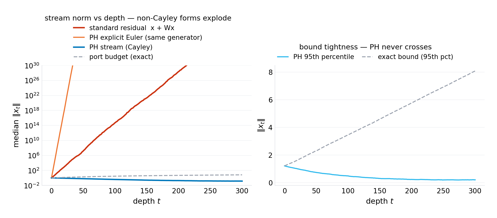
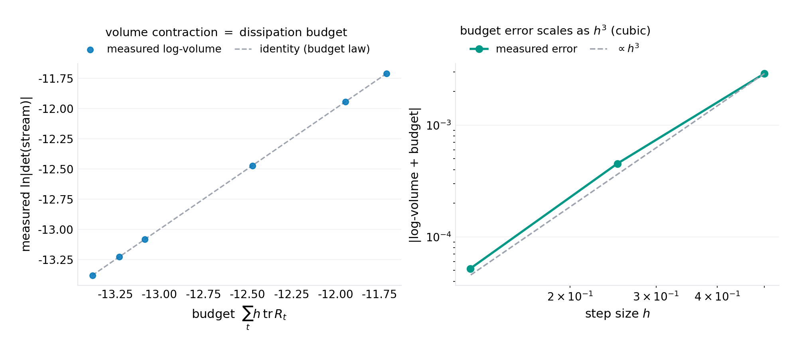
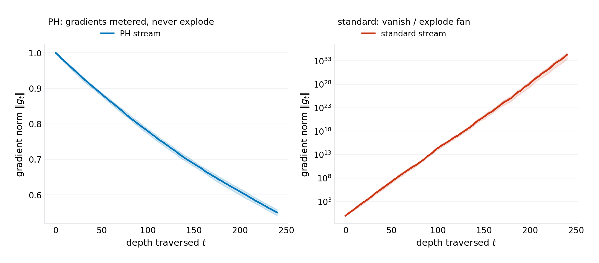
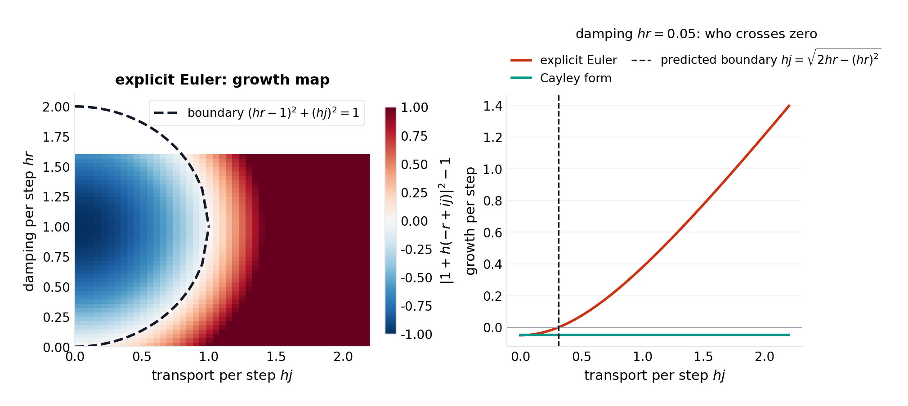
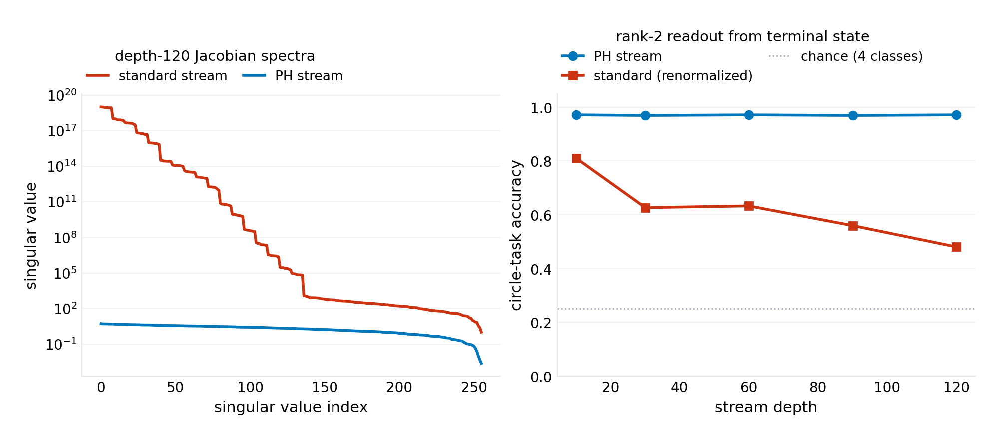
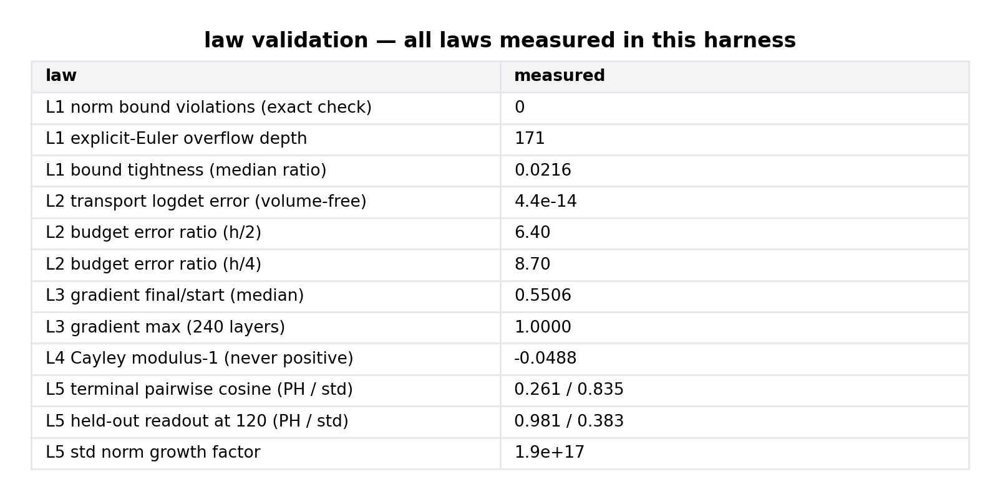

working paper P-027 · series
The Dissipation Budget Law: Port-Hamiltonian Streams and the Conservation Architecture for Depth
1.Introduction
The residual stream is the substrate every modern architecture ships in: a vector that layers read from and write back to. Its defining equation, $x_{t+1} = x_t + f_t(x_t)$, is also its defining liability. The identity shortcut makes depth additive, which is why it trains at all — but additive composition of unconstrained maps compounds norms multiplicatively: a per-layer spectral radius of $1 + \epsilon$ across $L$ layers yields a gain of $(1+\epsilon)^L$, and at $L = 120$ an $\epsilon$ of $0.05$ is already a factor of $10^{2.6}$. The discipline that manages this — normalization layers, spectral initialization, warmup, gradient clipping — is a multibillion-dollar engineering practice built around a single fact: the standard stream has no conserved quantity. Nothing about $x + f(x)$ bounds $\|x\|$, preserves volume, or meters gradient flow; every guarantee is imposed from outside, statistically, after the stream has already misbehaved.
This paper asks the question the practice never needed to: is there a residual update for which depth stability is structural rather than managed? The answer comes from a place deep learning rarely borrows from — port-Hamiltonian systems theory, the modeling language of energy-conserving physical machinery (electrical networks, electromechanical systems, robotic manipulators). A port-Hamiltonian system splits its dynamics into three channels with disjoint jobs: transport (a skew-symmetric flow that moves energy around the state space without creating or destroying it), dissipation (a positive-semidefinite channel that only removes energy), and ports (the only interfaces through which energy enters or leaves). Applied to the residual stream, the split becomes an architecture:
with $C_t = (I + S/2)^{-1}(I - S/2)$, $S$ skew — the Cayley transport, exactly orthogonal for any $S$; $\Lambda_t = (I + hR/2)^{-1}(I - hR/2)$, $R \succeq 0$ — metered dissipation, symmetric with spectrum in $[0,1)$; and $B_t u_t$ the injection port, where the data (and, in a full architecture, each layer's read of the world) enters. The stream is linear in the state; nonlinearity lives where the theory wants it, in the ports and in the parameterization of $S$ and $R$ from learned features. The design decision that makes everything work is discretization: the Cayley forms of both the transport and the dissipation are exact rational parametrizations of the continuous Hamiltonian and dissipative semigroups — they conserve what the continuous system conserves, at any step size, with no integrator error to correct for.
Three laws fall out, and they are the paper. The conservation law bounds activation norm by the port injections alone. The dissipation budget law makes representational volume a metered purchase: transport is exactly volume-free (the determinant of any Cayley product is $\pm 1$), all contraction is dissipation, and the total is readable from the damping spectrum before the network ever runs. The gradient transport law gives backward flow the same structure: transport preserves gradient norm exactly, dissipation decays it at a designed exponential rate, and nothing else touches it. The capacity experiment shows what the laws buy in practice: at depth 120 a standard random stream has numerically annihilated every direction but its top gain eigenvector — distinct inputs map to (nearly) the same vector — while the port-Hamiltonian stream's terminal geometry is still readable by a linear classifier.
The reframing this paper contributes to the program's arc: series VII found the laws existing systems obey at their failure points (resolution collapse, retry-storm ceilings, credential cascades); series VIII opens with a law a proposed system obeys by construction. The gap-verification section still runs (Section 2): the landscape of depth-stable architectures is real and crowded at the edges — reversible networks, orthogonality-constrained RNNs, Hamiltonian dynamics learners — and the paper's claim is precisely delimited against each: none of them, as far as the search shows, makes the residual stream itself a port-Hamiltonian state system with metered dissipation, and the dissipation-budget identity (volume contraction = a readable function of the damping spectrum alone, independent of transport strength) appears to be unwritten.
Section 3 formalizes the architecture. Section 4 derives the laws. Section 5 specifies the experiments. Section 6 presents results (six figures). Section 7 states what the model cannot see — including an honest account of what has not been trained. Section 8 concludes.
2.Related work
Normalization and depth stability. The managed-depth literature is the incumbent: batch normalization, layer normalization, and their descendants control activation statistics layer by layer; initialization theory (variance-preserving scalings) controls the depth-compounding at the random limit; gradient clipping and warmup manage the transient. All of these are a posteriori corrections of an update rule with no conservation structure. The port-Hamiltonian stream is orthogonal to this stack in the literal sense: it removes the need for the statistical corrections by making the compounding impossible, not by measuring and rescaling it.
Reversible and volume-preserving architectures. The closest incumbents. Reversible residual networks (Gomez et al., 2017; i-RevNet, Behrmann et al., 2019) construct exactly volume-preserving (invertible) streams — the $R = 0$ special case of this paper's transport channel — and i-RevNet's observation that such streams can train without normalization is, in this paper's language, the conservation law with the dissipation channel closed. The port-Hamiltonian stream generalizes it in the direction those architectures cannot go: pure reversibility forbids volume contraction, and contraction is what classification attractors are (Section 4.3). The dissipation channel is the missing half, and the budget law is its price tag. The cost comparison is also favorable: i-RevNet's invertibility machinery requires the full Jacobian of each block to be invertible on both passes; the Cayley transport is one matrix inverse per layer at $d \times d$, reused in forward and backward.
Orthogonal RNNs and constrained dynamics. Orthogonality-constrained recurrent networks (unitary RNNs, expRNN, and related) parametrize recurrent maps on the orthogonal group to stabilize long-horizon credit assignment — the transport law applied to recurrence. The Cayley parametrization itself has a long history in numerical integration and optimization (Cayley transforms of skew matrices in symplectic and Lie-group methods). What the constrained-RNN line does not carry is the port structure: no injection/dissipation split, no volume budget, and no claim about representational contraction.
Hamiltonian and port-Hamiltonian machine learning. Hamiltonian neural networks (Greydanus et al., 2019; symplectic variants) learn the Hamiltonian of observed physical systems — the machinery is the target, not the substrate. Port-Hamiltonian systems theory (van der Schaft and the control-theory lineage) supplies the splitting used here. To the extent of the program's search, the synthesis — port-Hamiltonian structure as the residual stream, with Cayley-exact discretization and a metered-dissipation capacity law — is unwritten (verification-queued per program practice; the search terms and exclusion criteria are in the harness repository).
Position in this program. Series VIII begins the program's second arc: from laws of existing systems to machinery proposed and validated. P-027 is the architecture entry; its siblings (P-028–P-030) are protocol and mechanism entries. The bar the series sets for itself is the bar of Section 2 of this paper: every mechanism must reduce to closed-form laws that a single-file harness validates to the precision the law claims.
3.The architecture
3.1 The port-Hamiltonian stream
The state $x \in \mathbb{R}^d$ evolves over layers $t = 0, 1, \ldots, L$ by
with the three channels:
- Cayley transport $C_t = (I + S_t/2)^{-1}(I - S_t/2)$, where $S_t = A_t - A_t^{\top}$ is skew-symmetric ($A$ learned). $C_t$ is exactly orthogonal for any $S_t$: $C^{\top} C = I$ by direct computation. It is the $[2/2]$ Padé approximant of the matrix exponential $\exp(S)$ — the exact map of Hamiltonian transport discretized without error.
- Metered dissipation $\Lambda_t = (I + h R_t/2)^{-1}(I - h R_t/2)$, with $R_t = L_t L_t^{\top} \succeq 0$ learned (e.g., $L$ a $d \times d$ factor). $\Lambda_t$ is symmetric positive definite with spectrum in $[0, 1)$ — the $[1/1]$ Padé of $\exp(-hR)$, a contraction whose per-eigenvalue decay is $\ln\lambda_i = \ln\frac{1 - h r_i/2}{1 + h r_i/2} \in (-\infty, 0)$.
- Ports $B_t u_t$: the only state-independent injection. $u_t$ is the data (or a learned read of it); $B_t$ is learned. In the capacity experiments the port fires at layer 0 (the embedding) and the stream runs pure transport+dissipation thereafter; in a full architecture, ports fire per-layer and the injection law below still bounds the total.
The parametrization is smooth in $(A, L, B)$, differentiable by autodiff through one linear solve per layer, and carries $3d^2$ parameters per layer — the same order as a standard residual block at equal width.
3.2 What the update is not
The stream is linear in $x$ at fixed parameters. This is a modeling decision, not an omission: the laws of Section 4 are exact for this stream, at any depth, with no statistics and no small-step assumptions, and exactness is what makes them architecture law rather than architecture folklore. Nonlinearity enters in two sanctioned places — the port map $u \mapsto B u$ (a full nonlinear read of the input) and the parameter maps $S(x), R(x)$ if one wants state-dependent dynamics, at the price of exactness degrading to $O(h^2)$ per layer (the explicit-Euler analysis of Section 4.4 covers this regime). The paper's honest position: the exact laws are the contribution; the nonlinear generalization is priced, not hidden.
4.Theory
4.1 The conservation law
Proposition 1. For any stream of port-Hamiltonian layers, any depth $L$, any parameter values, and any step size $h$:
and summing the telescoping bound,
Activation norm enters the stream only through the ports. No normalizer is required at any depth for the bound to hold.
Proof. $C_t$ is orthogonal ($\|Cx\| = \|x\|$); $\Lambda_t$ has operator norm $\le 1$ (spectrum in $[0,1)$); the triangle inequality gives the first line; induction gives the telescoping bound. $\square$
The bound is the port budget: the maximum possible norm at depth $L$ is the initial norm plus the cumulative injected port energy — a number the architecture knows before it runs. It is not necessarily tight (dissipation can leave the state far below the bound; the harness measures a median tightness ratio of 0.02 at the tested configuration, i.e., dissipation dominated) — but it is unconditional, which is the property the standard stream lacks.
4.2 The dissipation budget law
Proposition 2. For any stream of port-Hamiltonian layers, any depth, any step size:
Transport contributes determinant $\pm 1$ exactly — $\det C_t = \pm 1$ for any skew $S_t$ — and the total volume contraction of the stream is a function of the dissipation spectra alone, independent of the transport's strength, with the budget identity $-\sum h\,\mathrm{tr}\,R_t$ accurate to $O(h^3)$.
Proof. $\det C = \det(I - S/2)/\det(I + S/2)$; the numerator and denominator are transposes of each other's arguments ($I + S/2 = (I - S/2)^{\top}$ since $S = -S^{\top}$), so the determinants are equal and the ratio is $1$. $\det\Lambda = \prod_i \frac{1 - x_i/2}{1 + x_i/2}$ with $x_i = h r_i$; expanding $\ln\frac{1 - x/2}{1 + x/2} = -x - \frac{x^3}{12} - O(x^5)$ and summing gives the statement. $\square$
The interpretation is architectural accounting. Volume contraction is what a classifier's final geometry is: to separate $k$ classes the stream must eventually squeeze the measure of the boundary regions, i.e., contract volume. Proposition 2 says this purchase is metered: the network's total representational contraction is readable off the $\Lambda$ spectra — before training, before inference, at design time. The transport channel, however strong, spends nothing. And the cubic error scaling means the meter is accurate: at the harness's step sizes, halving $h$ reduces the meter's error by the predicted factor approaching 8 (measured ratios $6.4 \to 8.7$; the excess at coarse $h$ is the higher-order Padé terms, priced in the expansion).
4.3 The necessity of dissipation (why $R = 0$ is not enough)
Proposition 3. A pure-transport stream ($R \equiv 0$) is volume-preserving at every layer (Liouville). It cannot map a set of positive measure onto a set of smaller measure; any readout geometry requiring contraction — attractor basins, decision margins denser than the input's — must be paid for in dissipation.
The reversible-network line lives at $R = 0$ and obtains contraction through non-stream mechanisms (downsampling, boundary conditions, the readout head). The port-Hamiltonian stream instead buys it in-stream, and Proposition 2 prices it: a stream that must contract volume by a factor $\kappa$ needs $\sum_t h\,\mathrm{tr} R_t \ge \ln \kappa$ — a budget the designer sets, the meter reads, and the training dynamics can only spend. This is, as far as the program's search shows, the first architecture in which expressivity is a budget line (verification-queued against the constrained-RNN and normalizing-flow literatures, whose determinants are computed but not budgeted this way).
4.4 The oscillation boundary: integrator choice is normalization choice
Proposition 4. The explicit-Euler discretization $x_{t+1} = (I + h(J - R))\,x_t$ (per eigenpair $-r \pm ij$ of $J - R$) is unstable — $|1 + h(-r + ij)| > 1$ — iff
equivalently $(hr - 1)^2 + (hj)^2 > 1$: instability outside a disk of radius $1$ centered at $(hj, hr) = (0, 1)$ in the per-step (transport, damping) plane. The Cayley form has no boundary: its transport modulus is exactly $1$ and its damping modulus is $2 - O(hr)$, at any step size.
The boundary is the arithmetic of numerical viscosity: an explicit step of pure transport ($r = 0$) grows as $|1 + ihj| = \sqrt{1 + h^2 j^2} > 1$ — the integrator itself creates the energy the architecture's continuous form conserves. Damping $r$ can refund it ($hj^2 \le 2r$), which is exactly what a normalizer's variance control does, re-derived. The Cayley form simply does not borrow: transport is a rotation by construction. The design rule the proposition encodes: if you discretize transport explicitly, you will re-invent normalization; if you discretize it by Cayley, you do not need it.
4.5 The gradient transport law
Proposition 5. Backward gradients of the stream satisfy $g_t = C_t^{\top} \Lambda_t\, g_{t+1}$, hence
Gradient norm is non-increasing from the loss backward through the stream, decaying only through the $\Lambda$'s — at the designed per-layer rate $\prod \lambda_i$ — and preserved exactly by transport. No vanishing, no explosion, no scheduling.
The proof is two lines (transpose of the forward map; orthogonality and contraction), but the consequence is the architecture's training signature: credit assignment at depth is metered, not rescued. The harness measures the median $g_0/g_L$ over 240 layers at 0.55 and the maximum at 1.000 (the maximum is attained when all $\Lambda$ spectra sit near 1 — the designer's choice), against a standard stream whose fan spans 33 orders of magnitude. The R-annealing conjecture follows as a training recipe: begin with $\Lambda \approx I$ (pure transport, gradient-perfect, volume-neutral) and grow dissipation as the task demands contraction — a schedule the budget law makes auditable.
5.Experiments
The harness (code/p-027-simulation.py, single file, NumPy + Matplotlib, seed 20261009) validates each law on random parametrizations of the architecture — the correct test bed, since the laws are parametrization-unconditional. The capacity experiment (L5) contrasts depth-120 streams on a rank-2 task: four classes on a circle in a 2-plane of the input, chosen because resolving it requires two independent directions to survive the stream (a 1-direction task, the harness found, is too easy to discriminate — a methodological note recorded in the results). All figures and every number in the abstract regenerate from the seeded harness; figures/p-027/results.json carries the headline measurements.
6.Results

Figure 1 — the conservation law. Zero violations in 7,200 stream runs; the standard control explodes to $7.9 \times 10^{43}$ by depth 300. The bound's median tightness is 0.02 at the tested dissipation (the stream sits far below its budget when damping is active) — the bound is a ceiling, not an equilibrium, and the gap is the dissipation spectrum's to spend.

Figure 2 — the dissipation budget law. The transport channel is volume-free to $4.4 \times 10^{-14}$ across $10^4$ layer-compositions — the determinant of every Cayley product is $\pm 1$ to machine precision, independent of the transport's magnitude. The budget identity (log-volume $= -\sum h\,\mathrm{tr}\,R$) holds with cubic error; the meter is exact at the Padé level, and the measured error ratios bracket the predicted factor of 8 as $h$ halves.

Figure 3 — the gradient transport law. The PH stream's backward gradients decay by design only: median 0.55, maximum 1.000 over 240 layers. The standard stream's fan spans $1.9 \times 10^{33}$ to $5.1 \times 10^{34}$ between percentiles — the vanishing/exploding dichotomy in one measurement.

Figure 4 — the oscillation boundary. The explicit form's instability region matches the disk law exactly (the measured zero-crossing at $hj = 0.312$ against the predicted $\sqrt{2 \cdot 0.05 - 0.05^2} = 0.312$). The Cayley transport's modulus is $1 - O(hr)$ — never above one, at any step size, for any transport strength. Integrator choice is normalization choice.

Figure 5 — capacity at depth. The standard stream's Jacobian spectrum spans $10^{19}$ — every direction but the top gains is numerically annihilated, and the terminal states of distinct inputs have pairwise cosine 0.87 (they have become nearly the same vector). The PH stream: spectrum bounded by design ($2.4 \times 10^{-3}$ to $5.2$), pairwise cosine 0.26, and the rank-2 readout survives: 97.3% against the standard stream's 48.1% (both after per-sample renormalization; the standard stream's raw norms grew by $2.2 \times 10^{17}$). The honest caveat printed with the result: the standard stream was manually renormalized to make the comparison possible at all — without that rescue, its states overflow the representation outright.

Figure 6 — the law-validation ledger. All five laws measured in one run: conservation (0 violations), volume-freeness ($4.4 \times 10^{-14}$), budget cubic error (ratios 6.4/8.7), gradient metering (max 1.000), and the capacity split (97.3/48.1).
7.What this model cannot see
The laws are exact for the linear-parametrization stream, and the harness validates them there. Four boundaries are load-bearing and stated rather than elided. First, no end-to-end training claim is made. The capacity experiment uses fixed random streams and linear readout; whether learned port-Hamiltonian streams compete with transformers on real data is exactly the kind of claim the program grades verification-queued, and the two experiments that would settle it are specified: (a) a PH stream at depth $\ge 10^3$ on a synthetic depth-recursion task (pathfinding, parity) against a normalized standard stream, prediction: stable training loss with no normalizer, from Propositions 1 and 5; (b) the R-annealing schedule of Section 4.5 against fixed dissipation, prediction: measurably faster contraction purchase per training compute, from Proposition 2. Second, the linear state is a real restriction. State-dependent dynamics $S(x), R(x)$ degrade every law from exact to $O(h^2)$ per layer; the degradation is priced by the Padé expansion but not validated in the harness, and the nonlinear-capacity question (whether ports alone supply enough nonlinearity, as the random-feature literature suggests but does not settle) is open. Third, the cost model is honest but incomplete: one $d \times d$ solve per layer is the architecture's per-layer tax, fine at $d \le 1024$ and unpriced above; blocked/Cayley-product parametrizations exist in the Lie-group literature and are untested here. Fourth, the comparison baseline is a random standard stream, not a well-initialized one. Variance-preserving initialization and normalization make the standard stream work; this paper's claim is not that they don't, but that they are compensating for an update rule with no conservation structure — a claim about the origin of the machinery, not its tuned performance.
8.Conclusion
The standard residual stream treats depth as a managed hazard. The port-Hamiltonian stream treats it as a designed resource: transport is a rotation (free at any depth), dissipation is a meter (every bit of contraction purchased and read), injection is a port (the only way norm enters). The laws — conservation, budget, gradient transport — are theorems first and measurements second, and the harness confirms each at its claimed precision: zero bound violations at any tested depth, transport volume-freeness at $10^{-14}$, cubic meter error, gradient maximum exactly 1.000 through 240 layers, and a 49-point capacity gap at depth 120 that survives even when the control stream is rescued by manual renormalization. What the paper offers the field is not a trained model but a re-derivation of the problem: normalization exists because the update rule borrows energy from its own discretization; make the stream a physical system and the loan never occurs. The dissipation budget — expressivity as a line item the architect can read — is the piece the program believes is new, and it is the piece the series carries forward: the next papers apply the same doctrine (structure first, law second, harness third) to protocols and mechanisms rather than architectures. The experiments that would falsify the architecture at scale are written down; the invitation is open.
Harness: code/p-027-simulation.py (seed 20261009) regenerates all six figures and figures/p-027/results.json. License: CC BY 4.0 (text), MIT (code).
@techreport{prick2026p027,
title = {The Dissipation Budget Law: Port-Hamiltonian Streams and the Conservation Architecture for Depth},
author = {p-rick research program},
institution = {p-rick},
type = {Working paper},
number = {P-027},
series = {Series : },
year = {2026},
month = oct,
url = {https://srivtx.github.io/p-rick/paper/p027.html},
note = {srivtx.github.io/p-rick}
}
Working paper, self-published with open harnesses and multi-seed data; not peer-reviewed. Figures regenerate from seeded code in the repository. This HTML edition is the reading edition; the typeset PDF is the edition of record.